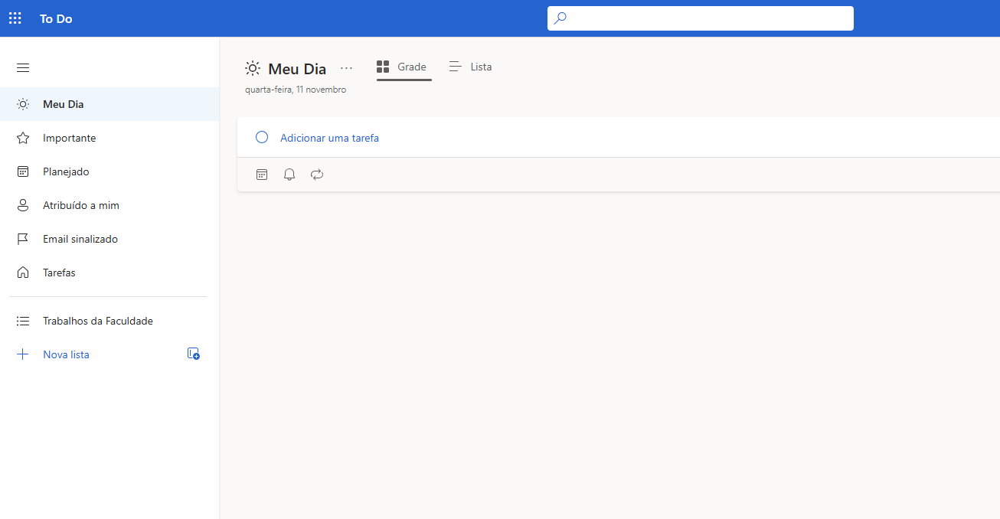
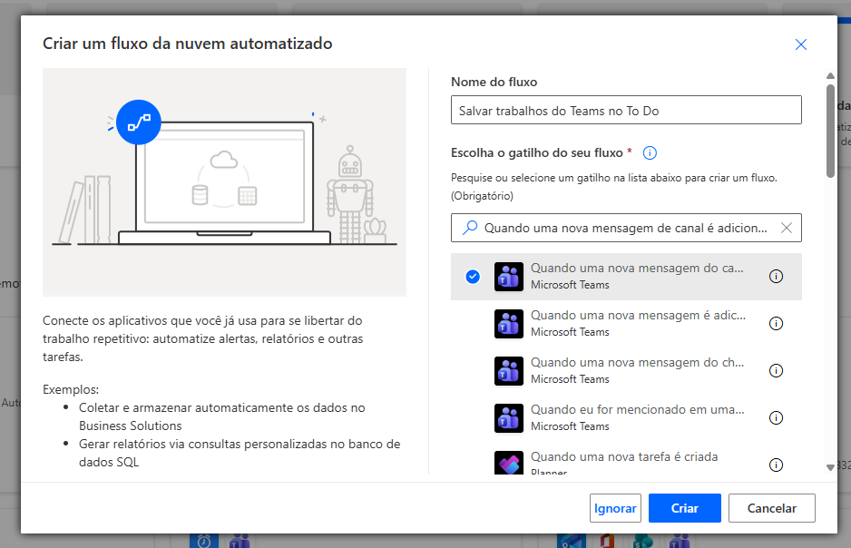
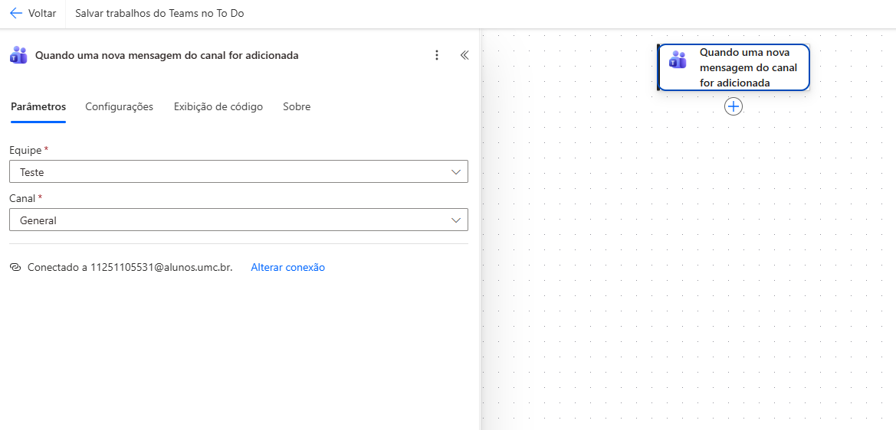
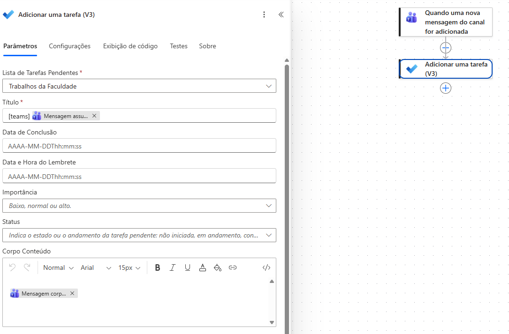
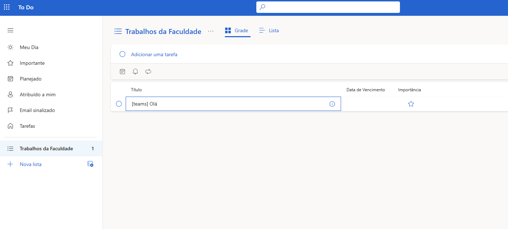

Power Automate · Tutorial 01
Salvar no Microsoft To Do os trabalhos que chegam no Teams
- Nível: Iniciante
- Tempo estimado: 15 minutos
- Microsoft Teams + Microsoft To Do
- Problema cotidiano
- Os professores publicam avisos de trabalhos e atividades nos canais das disciplinas no Microsoft Teams, e é fácil perder o controle do que precisa ser feito quando há várias matérias ao mesmo tempo.
- Objetivo
- Criar um fluxo que monitora o canal da disciplina no Teams e adiciona automaticamente cada novo aviso como uma tarefa na sua lista do Microsoft To Do.
- Pré-requisitos
-
- Conta institucional Microsoft 365 com acesso ao Power Automate, Microsoft Teams e Microsoft To Do.
- Participar de uma equipe de disciplina no Teams.
- Materiais necessários
-
- Uma lista criada no Microsoft To Do (ex.:
Trabalhos da Faculdade). - Navegador web atualizado.
- Uma lista criada no Microsoft To Do (ex.:
Lista de tarefas no To Do × Planilha no Excel
O Microsoft To Do organiza suas atividades em listas de tarefas (onde você pode marcar cada trabalho como concluído). Quando um professor cria uma atividade na aba Tarefas (Assignments) do Teams, o próprio Teams também publica automaticamente um aviso no canal Geral da turma — e é essa postagem no canal que nosso fluxo captura! Se você preferir salvar em uma planilha do Excel, basta trocar a ação final por Adicionar uma linha em uma tabela do conector Excel Online (Business).
-
Passo 1 de 5Prepare sua lista no Microsoft To Do
- Acesse to-do.office.com e entre com sua conta institucional da universidade.
- No menu lateral esquerdo, clique em + Nova lista (New list), digite
Trabalhos da Faculdadee pressione Enter.

Figura 1.1 — Criação da lista “Trabalhos da Faculdade” no Microsoft To Do. -
Passo 2 de 5Crie um fluxo da nuvem automatizado
- Abra make.powerautomate.com e clique em + Criar (Create) no menu esquerdo.
- Escolha Fluxo da nuvem automatizado (Automated cloud flow).
- Em Nome do fluxo, digite:
Salvar trabalhos do Teams no To Do. - No campo de busca de gatilhos, digite
Quando uma nova mensageme selecione Quando uma nova mensagem do canal for adicionada (When a new channel message is added) do conector Microsoft Teams. - Clique em Criar (Create).

Figura 1.2 — Seleção do gatilho de nova mensagem do canal do Microsoft Teams. -
Passo 3 de 5Escolha a equipe e o canal da disciplina
- Clique no bloco do gatilho Quando uma nova mensagem do canal for adicionada.
- Preencha os dois campos selecionando a turma que você quer acompanhar:
- Equipe (Team)
- Selecione a equipe da disciplina (ou uma equipe de testes, como
Teste). - Canal (Channel)
- Selecione o canal onde os trabalhos e avisos são postados (geralmente
General/Geral).

Figura 1.3 — Configuração da equipe e do canal da disciplina no Teams. -
Passo 4 de 5Adicione a ação para criar a tarefa no Microsoft To Do
- Clique no botão + abaixo do gatilho para adicionar uma nova etapa.
- Pesquise por
Microsoft To-Do (Business)e selecione a ação Adicionar uma tarefa (V3) (Add a to-do (V3)). - Em Parâmetros avançados, clique em Mostrar tudo e configure os campos usando o painel de conteúdo dinâmico:
- Lista de Tarefas Pendentes (To-do List)
- Selecione a lista
Trabalhos da Faculdadecriada no Passo 1. - Título (Title)
- Digite
[teams]seguido do conteúdo dinâmico Mensagem assunto (Message subject). - Corpo Conteúdo (Body Content)
- Selecione o conteúdo dinâmico Mensagem corpo content (Message body content) para trazer o texto completo publicado no canal.

Figura 1.4 — Configuração da ação “Adicionar uma tarefa (V3)” no Microsoft To Do. -
Passo 5 de 5Salve e teste o fluxo
- Clique em Salvar (Save) no topo da página.
- Clique em Testar (Test) → Manualmente (Manually) → Testar.
- Publique uma mensagem com assunto no canal configurado no Teams.
- Abra o Microsoft To Do e verifique a nova tarefa criada na lista
Trabalhos da Faculdade.

Figura 1.5 — Tarefa adicionada automaticamente à lista “Trabalhos da Faculdade” no Microsoft To Do.
Resultado esperado
Sempre que um trabalho ou aviso for publicado no canal monitorado do Teams, uma nova tarefa será criada automaticamente na sua lista Trabalhos da Faculdade no Microsoft To Do, com o texto da postagem.